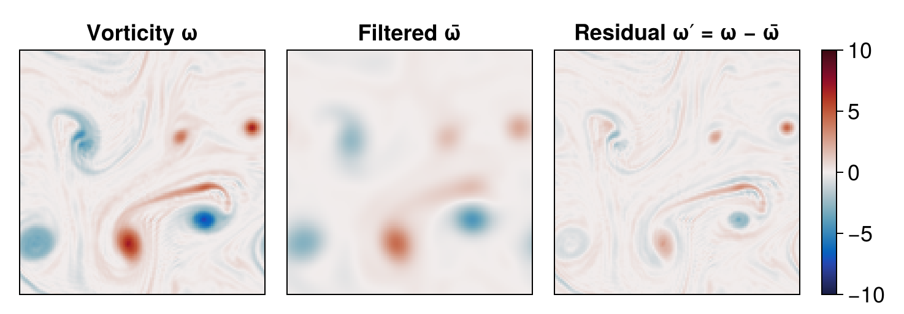
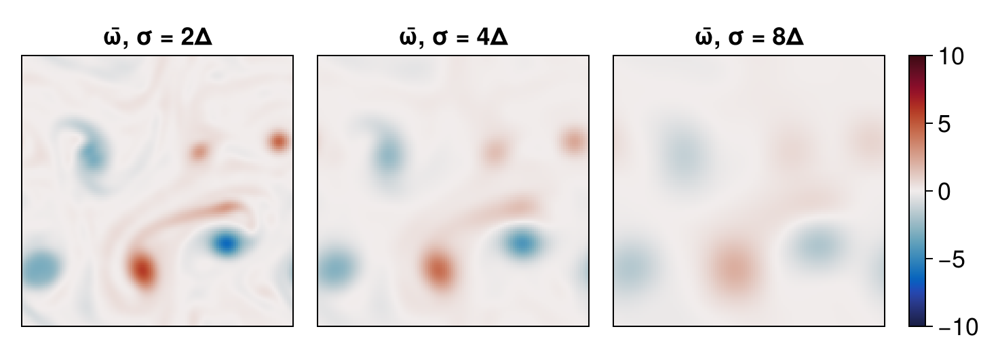
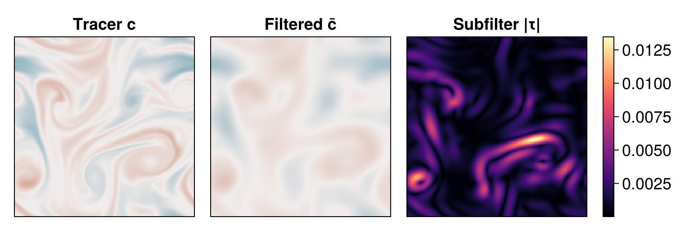

Spatial filtering and subfilter fluxes
In this example we use Oceanostics' GaussianFilter to coarse-grain a two-dimensional turbulent flow. Spatial filtering splits a field into a smooth, large-scale (resolved) part and a small-scale (subfilter) fluctuation,
\[\psi = \bar{\psi} + \psi', \qquad \psi' \equiv \psi - \bar{\psi},\]
where the overbar denotes a Gaussian-weighted local average with standard deviation $\sigma$. Beyond visualization, filtering lets us build subfilter (subgrid-scale) diagnostics such as the subfilter tracer flux $\tau_i = \overline{u_i c} - \bar{u}_i \bar{c}$, which represents the transport carried by scales smaller than $\sigma$.
Before starting, make sure you have the required packages installed for this example, which can be done with
using Pkg
pkg"add Oceananigans, Oceanostics, CairoMakie"Model and simulation setup
To get a turbulent field to filter, we follow the Two-dimensional turbulence example: we run the same quick doubly-periodic 2D turbulence simulation, initialized with a smooth, well-resolved sum of Gaussian velocity blobs and a sine/cosine tracer that the flow stirs into thin filaments. See that example for a detailed walk-through of the setup — here we only summarize it, with two differences: we use a smaller grid and a shorter run time, since we just need a developed, multi-scale field. (The grid here is uniform, but GaussianFilter also supports stretched directions, choosing a fast precomputed-weight path on uniform directions and a node-distance path on variably spaced ones.)
using Oceananigans
grid = RectilinearGrid(size=(128, 128), extent=(2π, 2π), topology=(Periodic, Periodic, Flat))
model = NonhydrostaticModel(grid; timestepper = :RungeKutta3,
advection = Centered(order=4),
tracers = :c,
closure = ScalarDiffusivity(ν=1e-4, κ=1e-3))NonhydrostaticModel{CPU, RectilinearGrid}(time = 0 seconds, iteration = 0)
├── grid: 128×128×1 RectilinearGrid{Float64, Periodic, Periodic, Flat} on CPU with 3×3×0 halo
├── timestepper: RungeKutta3TimeStepper
├── advection scheme: Centered(order=4)
├── tracers: c
├── closure: ScalarDiffusivity{ExplicitTimeDiscretization}(ν=0.0001, κ=(c=0.001,))
├── buoyancy: Nothing
└── coriolis: NothingInitial conditions:
using Random, Statistics
u, v, w = model.velocities
c = model.tracers.c
Random.seed!(772)
N_blobs = 24
σ_blob = 8 * minimum_xspacing(grid)
xc = grid.Lx * rand(N_blobs)
yc = grid.Ly * rand(N_blobs)
amp_u = randn(N_blobs)
amp_v = randn(N_blobs)
# Sum of blobs and their periodic images so the field is smooth across the periodic boundary
blob_sum(x, y, amp) = sum(amp[k] * exp(-((x - xc[k] - dx)^2 + (y - yc[k] - dy)^2) / σ_blob^2)
for k in 1:N_blobs,
dx in (-grid.Lx, 0, grid.Lx),
dy in (-grid.Ly, 0, grid.Ly))
uᵢ(x, y) = blob_sum(x, y, amp_u)
vᵢ(x, y) = blob_sum(x, y, amp_v)
cᵢ(x, y) = sin(3x) * cos(2y)
set!(model, u=uᵢ, v=vᵢ, c=cᵢ)
u .-= mean(u)
v .-= mean(v)128×128×1 Field{Center, Face, Center} on RectilinearGrid on CPU
├── grid: 128×128×1 RectilinearGrid{Float64, Periodic, Periodic, Flat} on CPU with 3×3×0 halo
├── boundary conditions: FieldBoundaryConditions
│ └── west: Periodic, east: Periodic, south: Periodic, north: Periodic, bottom: Nothing, top: Nothing, immersed: Nothing
└── data: 134×134×1 OffsetArray(::Array{Float64, 3}, -2:131, -2:131, 1:1) with eltype Float64 with indices -2:131×-2:131×1:1
└── max=1.06785, min=-1.24389, mean=1.27834e-16We run a short simulation with an adaptive time step to let the flow develop a range of scales:
u_max = max(maximum(abs, u), maximum(abs, v))
simulation = Simulation(model; Δt = 0.2 * minimum_xspacing(grid) / u_max, stop_time = 30)
wizard = TimeStepWizard(cfl=0.8, diffusive_cfl=0.8)
simulation.callbacks[:wizard] = Callback(wizard, IterationInterval(5))
run!(simulation)[ Info: Initializing simulation...
[ Info: ... simulation initialization complete (2.346 seconds)
[ Info: Executing initial time step...
[ Info: ... initial time step complete (2.604 seconds).
[ Info: Simulation is stopping after running for 12.740 seconds.
[ Info: Simulation time 30 seconds equals or exceeds stop time 30 seconds.Scale separation
We now filter the snapshot at the end of the run. We pick a filter width $\sigma = 4\Delta$ (a few grid cells) and split the vorticity into resolved and subfilter parts. Vorticity lives at $(f, f, c)$, so we interpolate it to cell centers before filtering (and for plotting).
using Oceananigans.AbstractOperations: @at
using Oceanostics
Δ = minimum_xspacing(grid)
σ = 4Δ
ω = Field(@at (Center, Center, Center) (∂x(v) - ∂y(u))) # vorticity at (Center, Center, Center)
ω̄ = Field(GaussianFilter(ω; dims=(1, 2), σ=σ)) # resolved (large-scale) vorticity
ω′ = Field(ω - ω̄) # subfilter fluctuation128×128×1 Field{Center, Center, Center} on RectilinearGrid on CPU
├── grid: 128×128×1 RectilinearGrid{Float64, Periodic, Periodic, Flat} on CPU with 3×3×0 halo
├── boundary conditions: FieldBoundaryConditions
│ └── west: Periodic, east: Periodic, south: Periodic, north: Periodic, bottom: Nothing, top: Nothing, immersed: Nothing
├── operand: BinaryOperation at (Center, Center, Center)
├── status: time=0.0
└── data: 134×134×1 OffsetArray(::Array{Float64, 3}, -2:131, -2:131, 1:1) with eltype Float64 with indices -2:131×-2:131×1:1
└── max=4.67303, min=-3.2875, mean=-1.00289e-18A normalized Gaussian filter removes small-scale variance while (on a periodic domain) preserving the field mean, so the filtered field is necessarily smoother than the original. We plot the three fields side by side:
using CairoMakie
set_theme!(Theme(fontsize = 18))
axis_kwargs = (aspect = DataAspect(),
height = 200, width = 200,
xticksvisible = false, yticksvisible = false,
xticklabelsvisible = false, yticklabelsvisible = false)
fig_ω = Figure()
ax_ω = Axis(fig_ω[1, 1]; title = "Vorticity ω", axis_kwargs...)
ax_ω̄ = Axis(fig_ω[1, 2]; title = "Filtered ω̄", axis_kwargs...)
ax_ω′ = Axis(fig_ω[1, 3]; title = "Residual ω′ = ω − ω̄", axis_kwargs...)
ω_range = (-10, 10)
heatmap!(ax_ω, ω; colormap = :balance, colorrange = ω_range)
heatmap!(ax_ω̄, ω̄; colormap = :balance, colorrange = ω_range)
hm_ω = heatmap!(ax_ω′, ω′; colormap = :balance, colorrange = ω_range)
Colorbar(fig_ω[1, 4], hm_ω)
resize_to_layout!(fig_ω)
fig_ω
The Gaussian filter splits the vorticity into a smooth resolved field $\bar{\omega}$ and the fine-scale residual $\omega'$ it removes.
Filter-width sweep
The amount of structure that survives depends on $\sigma$: the wider the kernel, the more scales are averaged away. We filter the vorticity at three increasing widths — $2\Delta$, $4\Delta$ and $8\Delta$ — and plot each result as it is computed.
σ_sweep = (2Δ, 4Δ, 8Δ)
ω̄_sweep = [Field(GaussianFilter(ω; dims=(1, 2), σ=s)) for s in σ_sweep]
fig_sweep = Figure()
for (i, s) in enumerate(σ_sweep)
ax = Axis(fig_sweep[1, i]; title = "ω̄, σ = $(round(Int, s / Δ))Δ", axis_kwargs...)
hm = heatmap!(ax, ω̄_sweep[i]; colormap = :balance, colorrange = ω_range)
i == length(σ_sweep) && Colorbar(fig_sweep[1, i + 1], hm)
end
resize_to_layout!(fig_sweep)
fig_sweep
Wider kernels ($\sigma = 2\Delta \to 8\Delta$) progressively erase smaller scales.
Subfilter tracer flux
Filtering also lets us quantify transport by unresolved scales. The subfilter tracer flux is $\tau_i = \overline{u_i c} - \bar{u}_i \bar{c}$: the difference between the filtered advective flux and the flux carried by the filtered fields. We interpolate the velocities to centers, build the products as Fields, filter each piece, and combine.
uᶜ = Field(@at (Center, Center, Center) u)
vᶜ = Field(@at (Center, Center, Center) v)
ū = Field(GaussianFilter(uᶜ; dims=(1, 2), σ=σ))
v̄ = Field(GaussianFilter(vᶜ; dims=(1, 2), σ=σ))
c̄ = Field(GaussianFilter(c; dims=(1, 2), σ=σ))
ūc̄ = Field(GaussianFilter(Field(uᶜ * c); dims=(1, 2), σ=σ)) # = overline(u c)
v̄c̄ = Field(GaussianFilter(Field(vᶜ * c); dims=(1, 2), σ=σ)) # = overline(v c)
τx = Field(ūc̄ - ū * c̄)
τy = Field(v̄c̄ - v̄ * c̄)
τ = Field(sqrt(τx^2 + τy^2)) # subfilter flux magnitude128×128×1 Field{Center, Center, Center} on RectilinearGrid on CPU
├── grid: 128×128×1 RectilinearGrid{Float64, Periodic, Periodic, Flat} on CPU with 3×3×0 halo
├── boundary conditions: FieldBoundaryConditions
│ └── west: Periodic, east: Periodic, south: Periodic, north: Periodic, bottom: Nothing, top: Nothing, immersed: Nothing
├── operand: UnaryOperation at (Center, Center, Center)
├── status: time=0.0
└── data: 134×134×1 OffsetArray(::Array{Float64, 3}, -2:131, -2:131, 1:1) with eltype Float64 with indices -2:131×-2:131×1:1
└── max=0.0134707, min=1.74766e-5, mean=0.00180643Finally we plot the tracer, its filtered version, and the magnitude of the subfilter flux:
fig_τ = Figure()
ax_c = Axis(fig_τ[1, 1]; title = "Tracer c", axis_kwargs...)
ax_c̄ = Axis(fig_τ[1, 2]; title = "Filtered c̄", axis_kwargs...)
ax_τ = Axis(fig_τ[1, 3]; title = "Subfilter |τ|", axis_kwargs...)
heatmap!(ax_c, c; colormap = :balance, colorrange = (-1, 1))
heatmap!(ax_c̄, c̄; colormap = :balance, colorrange = (-1, 1))
hm_τ = heatmap!(ax_τ, τ; colormap = :magma)
Colorbar(fig_τ[1, 4], hm_τ)
resize_to_layout!(fig_τ)
fig_τ
The magnitude of the subfilter flux $\tau$ is largest precisely along the thin tracer filaments — the small-scale structure that the filtered fields $\bar{u}_i\,\bar{c}$ cannot represent on their own.
This page was generated using Literate.jl.